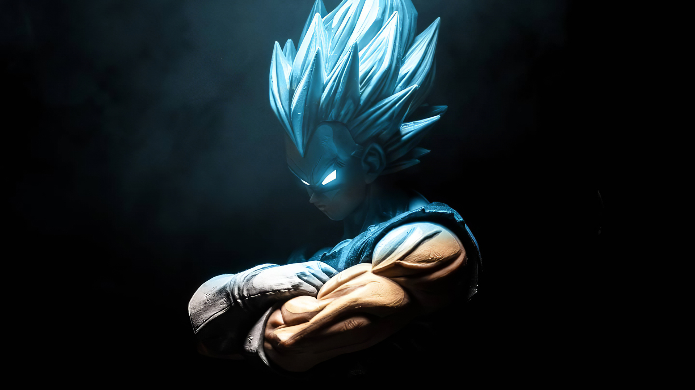

Vegeta is a fictional character from the popular manga and anime series "Dragon Ball" created by Akira Toriyama. He is one of the main characters in the series and plays a significant role throughout the story. Vegeta is a Saiyan, a warrior race in the Dragon Ball universe. He is initially introduced as a villain, seeking to obtain the Dragon Balls in order to gain immortality and surpass Goku, the series' protagonist. However, as the story progresses, Vegeta undergoes character development and eventually becomes one of the series' most prominent heroes. Vegeta is known for his pride and arrogance, often considering himself the prince of all Saiyans and seeking to prove his superiority. He possesses incredible strength, speed, and combat abilities, which he constantly hones through intense training. Vegeta's signature attack is the "Galick Gun," a powerful energy blast. Throughout the series, Vegeta engages in numerous battles against formidable foes, including other powerful Saiyans, extraterrestrial invaders, and powerful gods. He participates in several pivotal story arcs and contributes to the defense of Earth and the preservation of the Saiyan race. Vegeta's character arc involves personal growth, redemption, and a fierce rivalry with Goku. Despite their initial animosity, Vegeta develops a begrudging respect for Goku's strength and determination. Over time, Vegeta embraces his role as a protector and fights alongside Goku and their allies to save the universe from various threats. His character has become one of the most beloved and iconic figures in the Dragon Ball franchise, known for his complex personality, intense battles, and moments of heroism
